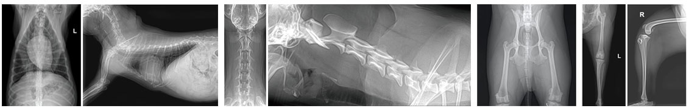

가족과 함께 평생을 함께하는 반려동물.
소중한만큼 건강을 챙겨주는 일도 최선을 다해야합니다
ANYPET ANIMAL HOSPITAL
가족과 함께 평생을 함께하는 반려동물.
소중한만큼 건강을 챙겨주는 일도 최선을 다해야합니다
ANYPET ANIMAL HOSPITAL
X-ray를 투사함으로써 신체의 내부 구조를 영상화하는 기법입니다. 흉부 및 복부와 사지 근골격계 질환에 대한 스크리닝 검사로 사용되며 본원에서는 디지털 방사선 장비와 의료영상저장전송시스템(PACS, picture archiving communication system)을 구축하고 있습니다.
사람이 들을 수 없는 고주파를 이용하여 간편하게 복강 내 장기나 눈을 포함한 연부조직의 형태를 확인할 수 있는 무해하고 안전한 검사법입니다. 모든 검사는 영상의학 전공수의사가 직접 진행합니다.
· ALOKA α5 및 ALOKA α7 초음파 장비 보유
초음파를 이용하여 심장의 형태 및 대형혈관의 형태를 확인하고 심장의 기능 및 혈류속도 등을 정확하게 확인할 수 있습니다. 심장 질환을 진단하고 약물의 사용여부를 결정하며 예후를 판단할 수 있습니다.
· Real time B mode, Doppler mode 검사
· TDI(Tissue Doppler Imaging) 검사
· 후천성 판막질환에 대한 Full-check up
X-ray를 이용하여 여러 각도에서 신체에 투영하고 이를 컴퓨터로 재구성하여, 일반 방사선 상에서 확인할 수 없는 병변을 단면 또는 3D 재구성을 통해 확인할 수 있는 진단 검사법입니다. 디스크 질환이나 복강 내 질환(종양, 간혈관 기형 등)과 중이염 및 복합 골절 질환 등을 진단할 수 있습니다.
· 국내최초 무마취 검사 실시
· 미세종양 조기진단
· 혈관기형 검사
중신체를 구성하는 물질의 자기적 성질을 측정해 재구성하고, 영상화하는 진단법입니다. 방사선을 이용하지 않고 자석을 이용하기 때문에 전리 방사선 피폭이 없는 장점이 있으며, 연부조직 해상도가 매우 높아 신경계와 관련된 다양한 뇌질환 및 척수질환의 진단이 가능하며, 관절질환 및 복강질환의 진단에도 사용됩니다. 최근 최신형 GE SIGNA Creator 1.5T MRI 장비를 도입하여 더욱 높은 해상력을 자랑합니다.
· 검사 중, EtCO2, ECG, 혈압 모니터링으로 안전성 확보
· 적응증상 : 경련, 다리마비, 경부통증, 의식변화
Copyrights (C) 2020 Veterinary Medical Teaching Hospital. Anypet Animal Hospital All Rights Reserved.
979-742 . 경기도 용인시 수지구 만현로 9 애니펫동물병원 tel . 031-265-8661 FAX . 031-256-8662 EMAIL . anypet@suy.ac.kr